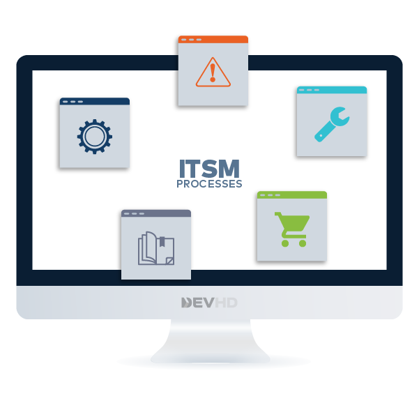
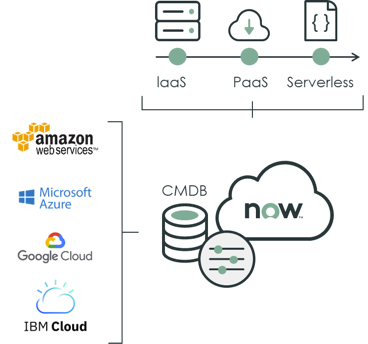

<div class="container">
    <!-- Because life at work is better when user experiences are intuitive and tasks are automated. And work
                moves faster when you can orchestrate across departments and IT applications with powerful workflows. -->
    <div class="row">
        <div class="col-md-12" style="min-height: 100px">
            <mat-tab-group dynamicHeight [selectedIndex]="routeId">
                <mat-tab>
                    <ng-template mat-tab-label>
                        <span class="mat-label">IT Service Management</span>
                    </ng-template>
                    <div class="col-md-12 dhd-simp" style="margin-top:50px;">
                        <!-- <h1>We are here to help you deliver services that increase productivity and achieve new insights
                            by developing innovative <span>ITSM</span> solution. </h1> -->
                        <h1>The IT Service Management (ITSM) solution enables you to <span>modernize</span> the way you
                            manage and
                            <span>deliver</span> services to your users through a single cloud-based platform. </h1>
                        <p>The ITSM solution makes it possible to <span>automate processes</span>,
                            <span>increase productivity</span> across the enterprise, and <span>gain data
                                visibility</span> and reporting, all
                            within one tool.</p>
                        <p><span>IT service management (ITSM)</span> refers to the implementation and management of
                            information
                            technology services. </p>
                        <div class="d-flex justify-content-center">
                            
                        </div>
                        <p><span><span class="dhd-brand">DEV-HD</span> IT Service Management</span> solutions with
                            <span>ServiceNow</span> allows you to customize or remodel the
                            processes, by finding solutions to automate recurrent activities and  enabling the IT
                            support organization quickly resolve or escalate issues and problems and provide higher
                            levels of business user satisfaction.</p>
                        <p>We bring our process expertise,<span> ServiceNow</span> experience and innovative solutions
                            that are
                            effective and provide complete life cycle support for these core processes.
                        </p>
                        <h1>INCLUDED IN THE <span>ITSM</span> SOLUTION </h1>
                        <div class="itsm-container">
                            <div *ngFor="let item of itsm; let i = index" class="itsm-tile"
                                [ngClass]="{'itsm-expanded': item.showDetails}">
                                <div class="itsm-wrapper" *ngIf="!this.detailsOn.itsm" (click)="onShowDetails(i, 'itsm')">
                                    <!-- <button (click)="onShowDetails(i)">
                                        {{item.title}}
                                    </button> -->
                                    
                                    <!-- <span class="itsm-header" [innerHTML]="item.title">
                                        {{item.title}}
                                    </span> -->
                                </div>
                                <div class="itsm-wrapper" *ngIf="this.detailsOn.itsm && item.showDetails">
                                    <!--  -->
                                    <h1 class="itsm-header">
                                        {{item.title}}
                                    </h1>
                                    <span *ngIf="item.showDetails" [innerHTML]="item.details"> </span>
                                    <span class="itsm-goBack" *ngIf="item.showDetails" (click)="onShowDetails(i, 'itsm')">
                                        <fa-icon [icon]="faReply" style="margin-right: 10px;"></fa-icon>
                                        Go back
                                    </span>
                                </div>
                            </div>
                        </div>
                        <h1>ITSM <span>Pro</span> </h1>
                        <p><span>ServiceNow’s ITSM Professional</span> will transform your service experience with
                            native <span>machine learning</span>, <span>virtual agents</span>, and
                            <span>analytics</span> capabilities. Launch new capabilities straight from the box without
                            the need for specialist skills. Customize
                            and refine as you go. Create a service environment that proactively supports your business
                            goals.</p>
                        <p>ITSM Professional brings to the standard ITSM package four additional applications:
                            <span>Predictive Intelligence</span>, <span>Virtual
                                Agent</span>, <span>Performance Analytics</span>, and <span>Continual Improvement
                                Management</span>.</p>
                        <div class="itsm-container">
                            <div *ngFor="let item of itsmPro; let pI = index" class="itsm-tile"
                                [ngClass]="{'itsm-expanded': item.showDetails}">
                                <div class="itsm-wrapper" *ngIf="!this.detailsOn.itsmPro" (click)="onShowDetails(pI, 'itsmPro')">
                                    <!-- <button (click)="onShowDetails(i)">
                                            {{item.title}}
                                        </button> -->
                                    
                                    <!-- <span class="itsm-header" [innerHTML]="item.title">
                                            {{item.title}}
                                        </span> -->
                                </div>
                                <div class="itsm-wrapper" *ngIf="this.detailsOn.itsmPro && item.showDetails">
                                    <!--  -->
                                    <h1 class="itsm-header">
                                        {{item.title}}
                                    </h1>
                                    <span *ngIf="item.showDetails" [innerHTML]="item.details"> </span>
                                    <span class="itsm-goBack" *ngIf="item.showDetails" (click)="onShowDetails(pI, 'itsmPro')">
                                        <fa-icon [icon]="faReply" style="margin-right: 10px;"></fa-icon>
                                        Go back
                                    </span>
                                </div>
                            </div>
                        </div>
                    </div>
                </mat-tab>
                <mat-tab>
                    <ng-template mat-tab-label>
                        <span class="mat-label">IT Business Management</span>
                    </ng-template>
                    <div class="col-md-12 dhd-simp" style="margin-top:50px;">
                        <!-- <h1>Insert subtitle here <span>ServiceNow IT Operations Management</span></h1> -->
                        <h1>IT Business Management is a strategic <span>portfolio planning</span> and <span>execution
                                tool</span> that allows you
                            to work where it matters most,
                            redirect spend to critical apps, and accelerate time to value. </h1>
                        <p>IT Business Management groups project portfolio management and agile capabilities into
                            <span>scalable packages</span> that can grow with you as your needs change. Align work with
                            business goals to deliver product and services in a way that supports your
                            strategic priorities.</p>
                        <p>IT Business Management (ITBM) helps IT demonstrate value to the organization and rationalize
                            investments to focus more on <span>innovation</span>.
                            ITBM also helps transform the delivery of new products and services through lean execution
                            methodologies. </p>
                        <h1 class="itbm-h1" (click)="expandSection('itbaPaExpanded')">Performance Analytics
                            <a class="arrow-icon" [ngClass]="{'open':itbaPaExpanded}">
                                <span class="left-bar"></span>
                                <span class="right-bar"></span>
                            </a>
                        </h1>
                        <div class="itbm itbm-pa" *ngIf="itbaPaExpanded">
                            <ul>
                                <li>
                                    <span>
                                        Best practice KPIs and dashboards
                                    </span>
                                    <p>Unlock value with out‑of‑the‑box
                                        content tuned for measuring your ServiceNow processes and apps. Tap into
                                        industry—leading metrics and benchmarks to improve performance.
                                    </p>
                                </li>
                                <li> <span>Real-time visibility</span>
                                    <p>Make better decisions and answer questions on
                                        the spot with instant access to current, live data—not the static charts from
                                        yesterday’s meeting or last week’s presentation.</p>
                                </li>
                                <li> <span>Analytics Hub</span>
                                    <p>Empower business workers to analyze, compare, and
                                        predict results using an intuitive, immersive studio.</p>
                                </li>
                                <li> <span>Spotlight</span>
                                    <p>Focus workers on what they should prioritize. Use business
                                        requirements instead of gut‑feeling to rank tasks or records, based on what’s
                                        important to your organization.</p>
                                </li>
                                <li> <span>Trusted information</span>
                                    <p>Use the real‑time, in‑platform data as your
                                        single source of truth—and stop questioning the validity of spreadsheets and
                                        scattered information.</p>
                                </li>
                                <li> <span>Security and scale</span>
                                    <p>Rest easy while your data stays secure and
                                        automatically scales within the ServiceNow cloud. Platform permissions apply
                                        consistently across reports, dashboards, and record‑level data, so there’s no
                                        chance
                                        of exposing information to the wrong audience.</p>
                                </li>
                                <li> <span>In-form analytics</span>
                                    <p>Act quickly with confidence and deliver contextual
                                        answers to your teams. Use embedded dashboards and KPIs within existing forms to
                                        enhance your decision‑making.</p>
                                </li>
                                <li> <span>Bring-your-own data</span>
                                    <p>Blend and analyze in‑platform performance
                                        results with existing Excel worksheets or JDBC data sources. Get the full
                                        picture by
                                        visualizing the relationships between your ServiceNow processes and
                                        externally‑collected data.</p>
                                </li>
                            </ul>
                            <h2>Benefits of Performance Analytics </h2>
                            <ul>
                                <li>
                                    <span>Anticipate trends</span>
                                    <p>Monitor performance to identify areas for improvement and detect service
                                        bottlenecks, before they occur. </p>
                                </li>
                                <li>
                                    <span>Prioritize resources </span>
                                    <p>Bring clarity to what matters and quickly re-direct service coverage where it’s
                                        needed most. </p>
                                </li>
                                <li>
                                    <span>Maximize automation and self-service </span>
                                    <p>Pinpoint where automation and self-service can increase efficiency. </p>
                                </li>
                                <li>
                                    <span>Guide continual service improvement </span>
                                    <p>Take action on KPIs using Analytics Hub, time charts, forecasts, breakdowns, and
                                        dashboards. </p>
                                </li>
                                <li>
                                    <span>Act with confidence </span>
                                    <p>Propel the business and results forward by aligning service and operations with
                                        company strategy. </p>
                                </li>
                            </ul>
                        </div>
                        <h1 class="itbm-h1" (click)="expandSection('itbaDmExpanded')">Demand Management
                            <a class="arrow-icon" [ngClass]="{'open':itbaDmExpanded}">
                                <span class="left-bar"></span>
                                <span class="right-bar"></span>
                            </a>
                        </h1>
                        <div class="itbm itbm-pa" *ngIf="itbaDmExpanded">
                            <ul>
                                <li> <span>Demand Workbench</span>
                                    <p>Configurable bubble charts enable quick demand
                                        scoring and comparisons.</p>
                                </li>
                                <li> <span>Demand manager dashboard</span>
                                    <p>Optimize the demand process with end‑to‑end
                                        demand pipeline analysis and timeline visualizations. </p>
                                </li>
                            </ul>
                            <h2>Benefits of Demand Management </h2>
                            <ul>
                                <li>
                                    <span>Better demand understanding </span>
                                    <p>Organize demand to better see overall demand for improved prioritization and
                                        strategic alignment. </p>
                                </li>
                                <li>
                                    <span>Forecast products and services demand </span>
                                    <p>Provide visibility to help track, manage, and forecast demand for products and
                                        services. </p>
                                </li>
                                <li>
                                    <span>Optimize the demand process </span>
                                    <p>Collect, organize, score, and prioritize demand based on value to the enterprise.
                                    </p>
                                </li>
                            </ul>
                        </div>
                        <h1 class="itbm-h1">Resource Management </h1>
                        <h1 class="itbm-h1">Innovation Management </h1>
                        <h1 class="itbm-h1">Project Portfolio Management (PPM) </h1>
                        <h1 class="itbm-h1">Scaled Agile Framework (SAFe) </h1>
                        <h1 class="itbm-h1">Agile Development </h1>
                        <!--  -->
                    </div>
                </mat-tab>
                <mat-tab>
                    <ng-template mat-tab-label>
                        <span class="mat-label">IT Operations Management</span>
                    </ng-template>
                    <div class="col-md-12 dhd-simp" style="margin-top: 50px;">
                        <h1>Eliminate <span>Service Outages</span> with ServiceNow IT Operations Management </h1>
                        <p>Move IT operations from a reactive team to one that <span>works intelligently</span> for the
                            business.</p>
                        <p><span>Gain visibility</span> across infrastructure and apps, <span>maintain</span> service
                            health, and <span>optimize</span> cloud
                            delivery and spend.
                            Deliver <span>high-performance</span> business services with visibility and AIOps. </p>
                        <p><span>ServiceNow® ITOM Enterprise</span> delivers a comprehensive and integrated set of ITOM
                            capabilities
                            that build seamlessly on your existing <span>ServiceNow® IT Service Management (ITSM)</span>
                            investment.</p>
                        <p><span>ServiceNow® Discovery</span> helps create a single system of record for IT
                            infrastructure spanning
                            data centers and clouds.</p>
                        <p><span>ServiceNow® Event Management</span> reduces event floods from monitoring
                            tools and provides a single dashboard to proactively identify service issues.</p>
                        <p>Our experts will help you integrate <span>ITOM</span> with
                            existing <span>ITSM</span> platform to gain visibility of
                            your end-to-end business services. You will benefit from the accelerated performance and
                            learn the relationship with your IT landscape. We are here to help you know your service
                            health by setting up self-service capabilities to engage in a multi-cloud strategy. </p>
                    </div>
                </mat-tab>
                <mat-tab>
                    <ng-template mat-tab-label>
                        <span class="mat-label">Inteligent Business Apps</span>
                    </ng-template>
                    Content 3
                </mat-tab>
                <mat-tab>
                    <ng-template mat-tab-label>
                        <span class="mat-label">Integration & Automation</span>
                    </ng-template>
                    Content 3
                </mat-tab>
                <mat-tab>
                    <ng-template mat-tab-label>
                        <span class="mat-label">Service Portal</span>
                    </ng-template>
                    Content 3
                </mat-tab>
            </mat-tab-group>

        </div>
    </div>
</div>